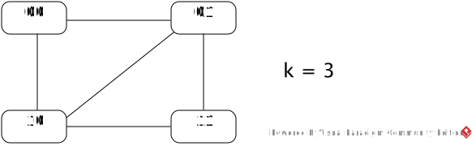
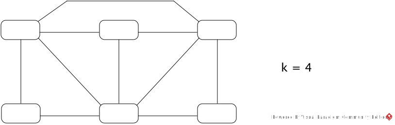

Consider the following polynomial-time reduction from CLIQUE to SAT.
We begin by a description of the reduction of the following example graph G, then generalize.

The four nodes are encoded by 2-bit numbers 00, 01, 10, 11.
The following is an adjacency list of G listing all adjacent nodes
(a1a2, b1b2):
(00, 01)
(00, 10)
(01, 00)
(01, 10)
(01, 11)
(10, 00)
(10, 01)
(10, 11)
(11, 01)
(11, 10)
This adjacency list is encoded by the formula:
adjacent(a1, a2, b1, b2) =
(a1=0 ∧ a2=0 ∧ b1=0 ∧ b2=1) ∨
(a1=0 ∧ a2=0 ∧ b1=1 ∧ b2=0) ∨
...
(a1=1 ∧ a2=1 ∧ b1=0 ∧ b2=1) ∨
(a1=1 ∧ a2=1 ∧ b1=1 ∧ b2=0)
ai = 0 is expressed by ¬ai and
ai = 1 is expressed by ai.
Nodes a1a2 and b1b2 are adjacent iff
adjacent(a1, a2, b1, b2) is true.
The existence of a 3-clique is encoded by φ with three 2-bit node variables
x1y1, x2y2, x3y3:
φ(x1, y1, x2, y2, x3, y3) =
adjacent(x1, y1, x2, y2) ∧
adjacent(x1, y1, x3, y3) ∧
adjacent(x2, y2, x3, y3)
Then φ(x1, y1, x2, y2, x3, y3)
is satisfiable iff there is a 3-clique of
nodes x1y1, x2y2, x3y3.
Now the generalization.
Let n be the # of nodes of the input graph G.
If k > n, G cannot have a k-clique, so the reduction immediately generates
a trivial unsatisfiable Boolean formula like x ∧ ¬x.
Otherwise, the nodes 0, …, n−1 are encoded by p = ⌈log2n⌉ bits.
The adjacency list of n nodes is then encoded by the formula
adjacent(a1, …, ap, b1, …, bp) which is
a disjunction of 2·e conjunctions, each of which containing 2p literals, where e is the # of edges of G.
Each conjunction encodes a pair of adjacent nodes in the manner illustrated in the above example.
The existence of a k-clique is encoded by
φ with k p-bit node variables
φ(x11, ..., x1p, ..., xk1, ..., xkp) =
∧adjacent(xi1, ..., xip, xj1, ..., xjp)
where the conjunction is formed for all i, j such that
1 ≤ i < j ≤ k.
-
Give the exact number of literals in the above φ for the example graph G and k =3.
-
Give the Boolean formula generated from the following instance of CLIQUE by the reduction.
Exactly how many literals does your formula have?

-
Give the exact number of literals in φ generated from any graph with n nodes and e edges, and
show that it is bounded by a polynomial of n.